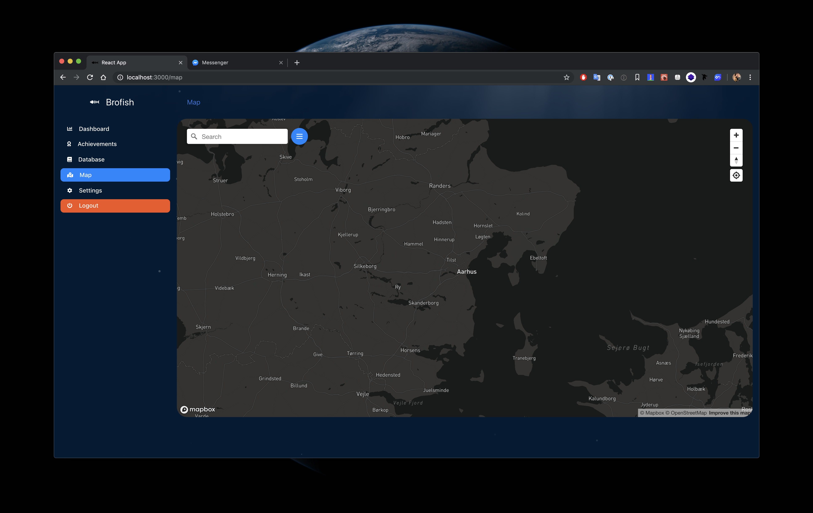
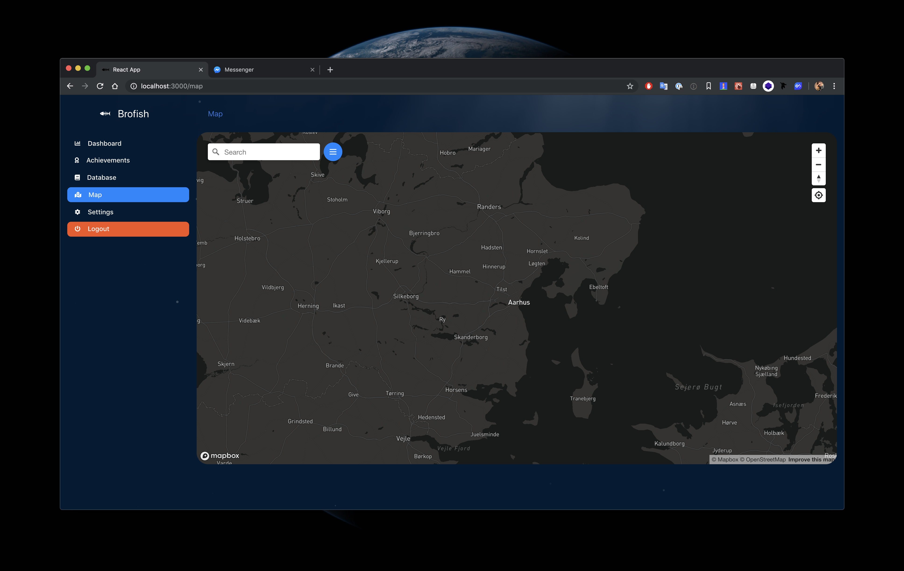

One of the first fishes I caught in Denmark
One of the first fishes I caught in Denmark
Context
I moved to Denmark in the summer of 2018, and experienced a whole new start. I got a new job, new friends, and discovered new hobbies. One of those hobbies was fishing. However, I had no experience with fishing whatsoever. I couldn't even tell different fish apart. As my interest for fishing grew, I started to wonder if there weren't any tools that could help. I asked my friends and tried some different apps, but they didn't quite match my expectations. That's the moment I decided to do it myself, and began creating my web-app Brofish.
One of the first fishes I caught in Denmark
Approach
I started by making a list of what I would like to have in the app. Next, I converted that list into many wireframes that developed into mockups over time. Without having coded anything yet, I showed my friends my progress and we talked about improving the concept.
When we had discussed all the base elements, it was time to start developing. Up until here I had worked mostly with Vue, but I wanted to learn something new. Since I had to learn more about Angular for my job, I decided to build this application with Angular as well.
I worked in my free time, so the app did not progress very fast. However, bit by bit there emerged a solid tool to support fishing fans with their hobby. After half a year I was super familiar with Angular, and I wanted a new challenge. My eye fell on React, and an interesting new design system that was compatible with it. Therefore, I decided to rebuild the whole project with React.
 
Screenshots from Brofish in React

Screenshots from Brofish in React
Result
I have started field tests with the application, but needless to say I will never stop working on this project. There will always be new things to add, or improvements of existing elements to improve the user experience and optimise the usability.